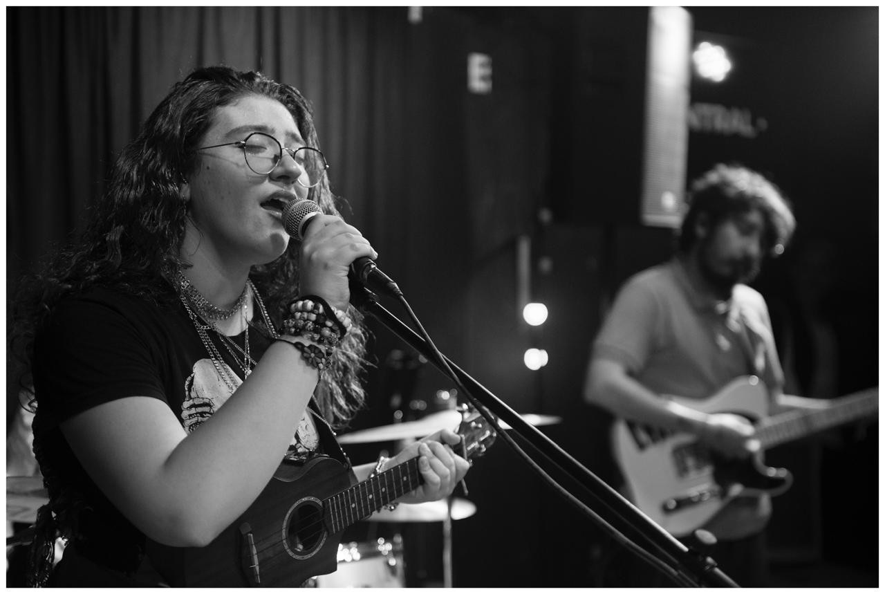

CELESTE SALLOUM:
Estrena Ah Kim Pech

Celeste Salloum es una cantautora y multiinstrumentista independiente basada en la Ciudad de México. Su música construye un universo donde la nostalgia, la identidad y la emoción toman forma, escribiendo desde lo que duele y lo que no siempre se puede decir en voz alta.
Hacer canciones que recuerdan a esa CDMX antes de la pandemia, que los amigos no son siempre lo que uno espera o que la familia es ese recuerdo que siempre te acompaña. Su intención es clara: crear un espacio donde quien escucha pueda sentirse acompañado.
AH KIM PECH: EL ESTADO DE LA MEMORIA
“Ah Kim Pech”, nombre en maya del estado de Campeche, es el segundo sencillo de su próximo álbum. La canción nace de una sensación difícil de nombrar: pertenecer profundamente a un lugar incluso cuando no puedes estar en él.

SONIDO Y REFERENCIAS
- ATMÓSFERA: Base pop con elementos de folklore mexicano.
- SENSIBILIDAD: Influencias que dialogan con Silvana Estrada.
- FRESCURA: Irreverencia que resuena con Bratty y Bruses.
- DUALIDAD: La tensión entre habitar la ciudad y desear el mar.
El video oficial acompaña el tono del proyecto con una mirada irónica. Mientras la canción evoca libertad y el mar, lo visual juega con la realidad de habitar una ciudad de asfalto, convirtiéndose en uno de los ejes centrales de su universo creativo.